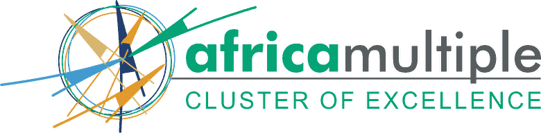
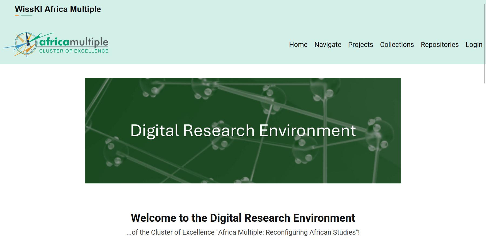
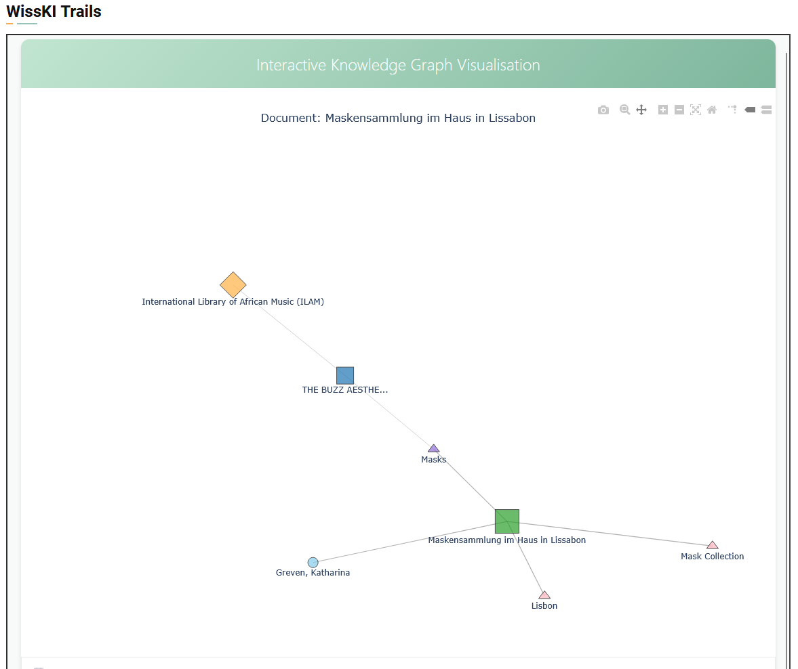

Contents
Reimagining the Archive in the Post-Truth Era · Rhodes University, Makhanda · 1 July 2026
Reconfiguring the Archive
Relationality and discovery in the Africa Multiple Interactive Research Atlas (AMIRA)
University of Bayreuth · German Excellence Strategy · since 2019
The Africa Multiple Cluster of Excellence
Reconfiguring African studies by confronting power imbalances in how knowledge is produced and shared.
- Multiplicity: relationships before fixed entities
- Relationality: worlds made, unmade, silenced
- Reflexivity: our own positions, and the power behind them

About us · Africa Multiple Research Centres (AMRCs)
A network of five centres

- Université Joseph Ki-Zerbo (Burkina Faso)
- University of Bayreuth (Germany)
- Moi University (Kenya)
- University of Lagos (Nigeria)
- Rhodes University (South Africa)
Shown in green on the map. africamultiple…/centres
Digital Research Environment (DRE) — the cluster's digital infrastructure unit
We build the cluster's data infrastructure
Four areas of work — one goal: research data that is findable, reusable and presentable.
Metadata and ontologies, Wikidata reconciliation, African-language taxonomies, DOIs and archiving.
Text mining, NLP, network analysis, web scraping.
OCR, transcription, entity extraction, tagging — on local, open-source, GDPR-compliant models.
Dashboards, maps, network graphs, Omeka S databases, websites.
Grounded in FAIR & CARE and multiple knowledge systems. Full range: africamultiple…/digital-solutions
DRE · how we work
Two principles guide how we work
Curation and description are shared with our AMRC partners. Each centre describes the data it knows best; the DRE runs the shared infrastructure that connects them.
Data stays in its local repository; Bayreuth holds the metadata layer that points to it. Research data becomes findable without being relocated.
The first phase
We began with WissKI
A semantic research-data system built on knowledge graphs — entities and their relations, tied to shared ontologies.
WissKI — Wissenschaftliche Kommunikationsinfrastruktur, "scientific communication infrastructure".




The new platform · replacing WissKI@UBT
Enter AMIRA
The Africa Multiple Interactive Research Atlas — the Cluster's new home for its research data, publications and outputs.
Items, people, projects, publications and media — with type-ahead autocomplete and faceted filters.
Maps, network graphs and charts across the whole collection at once.
Every person, project, subject and place is its own page you can open.
Now live Built on Omeka S
The atlas, live
Africa Multiple Interactive Research Atlas
International Library of African Music (ILAM)
A collection from Rhodes, in AMIRA
An external collection from ILAM at Rhodes — its catalogue is described in AMIRA
Search & discovery
Facets, filters, autocomplete — built on Typesense
Built on relationality
Here an entity is the sum of its relationships, rather than a standalone record.
Relationality, one of the cluster's three concepts, treats phenomena as formed through their relationships — and attends to the worlds those relationships leave unmade or silenced.
Relationality, made visible
Connections, not records
Open a record — here, Prof. Ute Fendler — and AMIRA lists every resource linked to it, each labelled with the nature of the connection.
Projects, publications, co-authors, places and subjects — each its own page, and each link naming the relationship.
Custom Omeka S module · built in-house
Spatial exploration
Every georeferenced place in the collection: pan, zoom, open.
Custom Omeka S module · knowledge-graph links
Entities and their links
The whole collection as one network — entities such as people, projects, subjects and places, drawn together by the links recorded between them in the knowledge graph.
Where it's hardest
An atlas of relations is only as strong as its weakest metadata.
The weakest part is almost always subject description — the part that researchers supply the least of all.
When terms do exist
Whose subject headings?
Where subject terms exist, they tend to come from Library of Congress Subject Headings.
- Our pipeline matches subjects against the LCSH API
- LCSH was built elsewhere, for other collections
- African concepts and languages fit it poorly
- Borrowed terms reshape what can be found
Risam (2018): standard schemas can carry epistemic violence — categories that erase as they describe.
Still exploratory
Building the entities the vocabulary lacks
Open, multilingual, editable by communities rather than one national library.
- Reconcile people, places, institutions to Wikidata
- Create the African entities it still lacks
Open-source local LLMs draft candidates at scale; people review and approve.
- Draft labels, definitions, links for review
- Curators and centres keep the final say
Thank you
Who has the authority to decide how knowledge is described, and therefore how it is found?
In an era of contested truth, this is the challenge that reimagining the archive must face.
Explore AMIRA: data.africamultiple.uni-bayreuth.de/s/amira